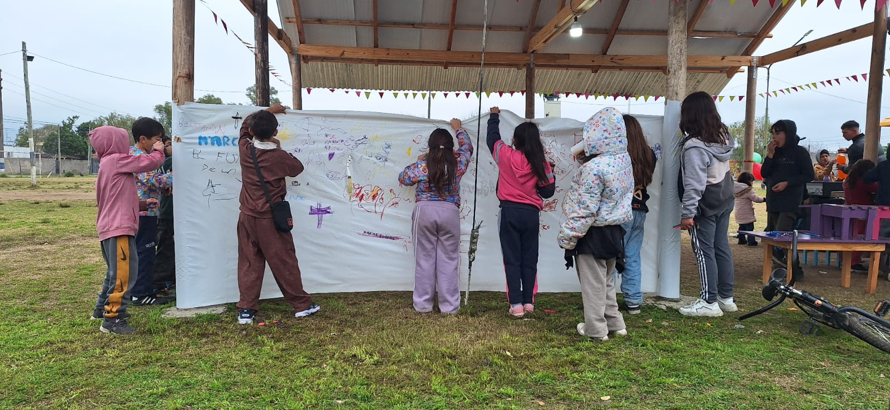

QUIÉNES SOMOS
Un colectivo que cree que el arte puede transformar.
Nuestra historia y motivación
El Puente Arte y Cultura nació de la convicción de que la cultura es un derecho, y que ese derecho se ejerce, no se espera. Somos un colectivo de trabajadores que encuentra en la expresión artística un canal para llegar donde otras herramientas no llegan: a las personas que el sistema deja afuera.
Sin sede fija, nuestro trabajo se mueve donde hace falta. Colaboramos con organizaciones, instituciones y comunidades en proyectos que priorizan el vínculo humano. El compromiso social está primero; el formato artístico viene después.
Nuestro principal espacio de acción son los contextos de encierro, donde llevamos talleres artísticos a personas privadas de libertad, tanto menores como adultos, en el marco de un convenio con el Ministerio de Justicia de la Provincia de Buenos Aires.

Lo que hacemos
Nuestras actividades se definen por dónde son necesarias, no por dónde son cómodas.
-
Talleres en centros cerrados de detención
Llevamos talleres de artes visuales, teatro y escritura a unidades penales de menores y adultos. El objetivo es generar un espacio de expresión real para personas a quienes el sistema niega sistemáticamente ese derecho.
-
Proyectos culturales itinerantes
Sin sede fija, producimos y participamos en actividades culturales en distintos espacios. Espectáculos, muestras y acciones artísticas que se mueven hacia donde está el público, no al revés.
-
Articulación con organizaciones
Trabajamos junto a movimientos sociales e instituciones en proyectos que exceden lo artístico. La cultura como punto de encuentro para construir vínculos y visibilizar problemáticas concretas.